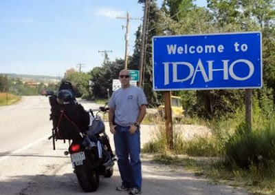

 |
| Robert Pierson, shortly before being illegally detained by Deputy Corry Bassett. |

“It’s just about being safe.”
Thus spoke Deputy Corry Bassett of the Lincoln County,
Wyoming Sheriff’s Office as he
struggled to justify handcuffing Robert Pierson during an August 11, 2011
traffic stop.
Pierson, a Marine combat veteran, had been riding his motorcycle
near Alpine when another motorist called to complain about a biker passing a
number of slow-moving motor homes. Pierson was not charged with a traffic
violation or a criminal offense -- but he was arrested and detained in
handcuffs for 45 minutes because the sight of a Mundane carrying a firearm
caused Bassett to irrigate his underwear.
“I know you have a gun,” Bassett said a few seconds into the
stop, which was recorded
on Pierson’s cell phone. “Are you a cop?”
When Pierson indicated that he was not part of the armed
revenue-extracting caste, Bassett muttered: “OK, what I’m going to do is – put your
hands behind your back right now.”
As he handcuffed the compliant motorist, Bassett explained, “I
don’t like someone with a gun,” while insisting, “You’re not under arrest.”
The second statement is an unalloyed lie: Whenever a police
officer restrains someone, that person is under arrest. The first statement is
a lie by omission: If Pierson had been a police officer, Bassett would not have
complained about him carrying a gun. The category of “someone” thus applies
only to Mundanes, whose very existence is seen as a threat to the unimaginably
precious personages who wear state-issued costumes.
“It’s the first thing you should have told me, [that] you’ve
got a gun,” simpered Bassett, whose panic-tinged voice was thrown into sharp
relief by Pierson’s composure.
“Well, actually I’m not required to tell you in either Idaho
or Wyoming,” Pierson correctly pointed out.
“Yes, you are,” insisted Bassett. “If you’re packing a gun,
I want to know about it.”
“Well, I’m open-carrying,” Pierson observed, stating the
obvious. As Bassett began a rote speech describing the sacred imperative of “officer
safety,” Pierson pointed out that he had done nothing wrong or illegal, that
the deputy’s safety “is not in any way in jeopardy," and that actually “it’s not
my concern.”
“It is!” yelped Bassett. “It’s my concern!”
“My only concern is my personal rights and individual
liberties, which you are violating right now,” noted Pierson.
“No, I am not,” Bassett lied.
“You have me handcuffed,” Pierson reminded the increasingly
petulant officer.
“I handcuffed you for [sic] number one, you did not tell me
you had a gun on you, ‘kay?” Bassett groused. “You do not get off your bike and
face me, and I see a weapon on you! I don’t like that!”
“You asked me if I could get off my bike, and you said `yes,’”
recounted Pierson.
“I
understand your concerns about search and seizure, but you have to understand
one thing about where we’re at in law enforcement,” stated Bassett. “I’m asking
you for my safety. I don’t know you. I don’t know your intentions.”
The same could have been said by Pierson about Bassett, who was, after all, just another armed stranger. One critical difference, of course, is that Pierson knew that Bassett’s intentions were malign: After all, the deputy had detained him, which is an act of aggression by any definition.
Recall
that when Bassett noted that Pierson had a gun, his first question was: “Are
you a cop?” If Pierson had been a fellow member of the Brotherhood of Official
Plunder, this would have allayed Bassett’s concerns.
In
fact, after noticing that Pierson carried a military ID, Bassett suggested that
the detainee should see the encounter in terms of “force security” in a battle
zone.
“You’re
in the military,” Bassett began. “You ever been shot at? Would you like, if you
roll up on somebody you have no idea who they are … wouldn’t it be a question
in your mind if this person’s got weapons on them?”
Bassett,
who never served in the military, clearly saw himself as part of an army of
occupation – and insisted on unqualified submission to his supposed authority.
“Your
safety does not trump my right and my liberty,” Pierson tutored the deputy.
“When
I stop you, yes it does,” asserted Bassett.
“Your
personal safety is more important than all the laws, the Constitution, and every one of my
personal rights and liberties,” summarized Pierson, his voice heavy with
disgusted incredulity.
“When
I’m in a traffic stop, yes,” declared Bassett. “I’m in control of this
situation.”
“The
Constitution is in control of this situation,” Pierson rejoined.
“No
– I am… and if I feel that I’m going to be threatened by the fact that you have
a gun on your side, by hell I’m gonna do it,” concluded Bassett.

Forty-five
minutes later, Deputy Rob Andazola arrived to provide “backup.” At that point, as
Bassett has admitted in a sworn deposition, the deputies offered to unshackle
Pierson if he allowed Andazola to draw his weapon and shoot the motorcyclist in the event he made any gesture perceived as a “threat.”
Pierson
didn’t agree to those terms. Eventually a patrol supervisor reached the scene
and acknowledged that the motorcyclist had done nothing wrong. Until that
happened, however, Pierson was handcuffed, disarmed, and entirely at the mercy
of two armed strangers who considered it their right – if not their duty – to kill
him if he displayed any behavior that made them uneasy.
“I
didn’t know whether kicking my leg over the bike, or walking away, or what they
could possibly constitute as a hostile act,” Pierson
told the Associated Press. “And I was a little unnerved by the fact that
they were threatening lethal force with a deadly weapon against a man who was
compliant, in handcuffs, who had been screened.”
In
the sacred cause of “officer safety,” no precaution is excessive, no imposition
unjustified – and no constitutional “guarantee” of individual rights is
binding.
Pierson’s
legitimate concern for citizen safety in the presence of police is underscored
by an incident that occurred near Canton, Ohio just weeks before the traffic
stop in Wyoming.

On
June 8, 2011, Patrolman Daniel Harless of the Canton, Ohio Police
Department, repeatedly threatened to murder the driver, William E.
Bartlett, for carrying a concealed handgun for which he had obtained the
appropriate permit.
At all times, Bartlett was composed and cooperative. He made every effort to comply with the Ohio concealed carry ordinance by notifying Harless that he was carrying a weapon, and displaying his concealed carry license. He was rewarded with a profane outburst in which Harless made it clear that he was eager for a chance to kill somebody.
At all times, Bartlett was composed and cooperative. He made every effort to comply with the Ohio concealed carry ordinance by notifying Harless that he was carrying a weapon, and displaying his concealed carry license. He was rewarded with a profane outburst in which Harless made it clear that he was eager for a chance to kill somebody.
“As soon as I felt
your gun I should have took [sic] two steps back, pulled my Glock 40 and just
put 10 bullets in your ass and let you drop,” ranted Harless. “And I wouldn’t
have lost any sleep.”
After threatening to
“put lumps on” a witness to the incident, Harless told Bartlett, “I’m so close
to caving in your f*****g head…. You’re just a stupid human being…. F*****g
talking to me with a f*****g gun. You want me to pull mine and stick it to your
head?”
Unlike Harless, who was obviously deranged, Bassett and
Andazola did not dissolve into puddles of psychotic rage. But lurking behind their
veneer of “professionalism” was a willingness to commit homicide simply because
the sight of a Mundane with a firearm made them feel kind of funny.
When contacted by Pro Libertate to comment on the case,
Captain John Steztenbach of the Lincoln County Sheriff’s Office explained that “Our
lawyer has told us that we are to say absolutely nothing about this case. I would
love nothing more that for the other side of the story to be told, and we’re
very frustrated that we can’t tell it, but it’s been made clear that until this
goes to court, we’re not to comment on any aspect of this case.”
Stetzenbach, a courteous and well-spoken Connecticut native,
explained that the gag order applies not only to the details of Pierson’s
arrest, but also to any discussion of the department’s instructions and
guidelines dealing with matters of “officer safety.” After describing how he
had come to the Rocky Mountain West to study at a gunsmith trade school in
Colorado, Stetzenbach proclaimed that both he and the department he serves are “very
pro-Second Amendment,” and promised that when the legal issues are settled he
will be very eager to “tell the whole story.”
| What about "citizen safety"? Deranged Fed threatens to murder acitizen over a protest sign. |

“It always amazes me how in situations like this, one side gets out very quickly, and it’s not ours; that’s really frustrating,” Stetzenbach complained.
In this case – as in other “situations” of its kind – the
officers have themselves to blame for the fact that the public hasn’t seen “their
side” of the story, since the dashcam recordings of the encounter have
mysteriously disappeared.
The victim documented the incident, and the chief assailant
has confirmed all of the victim’s key assertions. Res ipsa loquitir.
In his sworn deposition (as paraphrased by the AP), Bassett
admitted that he had been “trained to put his personal safety above the rights
of a citizen openly carrying a handgun.”
“We’re told every day, our safety is first,” Bassett pointed
out. “We’re here to come home every night.”
Remember that admission next time you’re told that the
police are here to protect and serve the public.
If you can spare a few bucks, please help me keep Pro Libertate on-line.
Thanks, and God bless!
Dum spiro, pugno!
34 comments:
If that disgusting reaver, Corry Bassett, feels that a traffic stop is SO dangerous, and means his safety must be more important than not becoming evil, perhaps he should try to get an honest job instead of remaining a tax addict. Stop being a bad guy and you don't need to worry about the rest of us.
You spelled it wrong. Not sacred, but SCARED!!! Pussies.
In Kentucky, three things have to take place before a person is legally under arrest.
1) The arrester must inform them they are being arrested.
2) The person must be informed of the offense for which he is being arrested.
3) The person must be submitted to or restrained by the arrester.
The statute also states that "No unnecessary force or violence shall be used....."
Bassett did tell the victim he was under arrest and did have him physically restrained. But there was no offense to arrest the victim for and any force used against the victim was unnecessary. In Kentucky, Bassett would be guilty of kidnapping, assault, and battery, if the laws were enforced against the government thugs they way they should be.
Don't pretty it up by saying the victim was arrested, he was kidnapped pure and simple.
It's clear to me reading your blog, that law enforcement in this country has been transformed my the mentality of war. Many of the new recruits having learned the trade the last ten years, in Iraq and Afghanistan. It hasn't helped, that our blessed Fed Gov has been feeding police with the used weapons of Iraq. No doubt too, they have proffered much training about the Martial Law they have been laying the ground and legal work for. Yet few "Citizens" recognize how American has become an occupied nation. Nor that the drums are pounding very loud, for WORLD WAR!
There is a very simple way to tell whether or not the pigs... - er, excuse me, I meant to write "cops" - whether or not the "cops" genuinely believe that the situation is truly dangerous to their well-being. If the cops are still on the street and visible, they're not yet scared. You'll know they were genuinely scared when they disappear from sight.
As I posted on my own blog some time ago, I was living in Los Angeles during the “Rodney King Riots”, and I remember it well. As soon as the situation got truly dangerous for the “cops”, they friggin’ DISAPPEARED en masse! Hell, you couldn’t even find a cop in a doughnut shop! Not until the streets became safe again did those pseudo-tough a-holes reappear on the streets of L.A. So much for that swearing “to protect and to serve” bullshit!
I am a law-abiding person, and I absolutely CAN’T STAND most cops! I think that says a lot more about cops than it does about me.
I’ve said it before, on THIS blog and on other blogs: I think the American taxpayer would be better served if we dissolved the nation’s police departments and let the citizens become responsible for their own safety. A serious study of the Western territories during the Pioneer era, when official law enforcement was scant or nonexistent, will show that the people policed themselves better than the pi— er, I mean, than the “cops” - are policing the people today. We don't need them; they're more trouble than they're worth.
~ D-FensDogg
‘Loyal American Underground’
I wish all of our vets felt and behaved as Robert Pierson.
Men like him should be required by law to carry firearms.
When he quoted his service oath to Bassett it put the entire
situation into proper perspective, at which point Bassett truly
had probable cause to start trembling in his boots.
The irony in this is that Pierson, in service to the empire, engages in an activity that violates another nation and its peoples sovereignty, and then comes home to find the same being done to himself. Will wonders never cease?!
I find these incidents strange when they occur in an open carry state like Wyoming. I've been stopped a couple times here in Texas and each time I handed the officer my CHL with my license, he asked if I was armed, I said yes, and no further mention or consideration of my weapon took place. If these officers were concerned about me being armed they didn't show it.
Instead of wasting his precious life-minutes violating the Confucian prohibition against arguing with a moron, here is all that Pierson needed to say:
"If I had intended to shoot you, you would already be dead, you chickenshit little swinetard."
Depends on the pig...er, I mean cop. Some of them are actually MEN.
Seem to be getting real scarce tho...
Speaking of out of control police and the police state, check out the latest speech by Trentadue about his brother's "suicide" and the subsequent coverup that led to Trentadue discovering PATCON. Not a surprise to see a link to Eric Holder and gun running out of AZ as part of PATCON. Or a link to Eric Holder muzzling Senator Hatch after his planned investigation into the "suicide."
http://www.youtube.com/watch?v=b2fk3sk13pg
I agree that was pretty terrible behavior on the part of the police if all is as has been reported here. I would like to hear both sides before making a final decision.
One thing I would like to point out though, you made a grave error in saying that any time law enforcement restrains you, it is an arrest. That is absolutely not correct. A Terry Stop is not an arrest. A routine traffic stop, as in when you get a ticket for speeding, usualy is not an arrest. A police officer intervening in a fight between two drunks and restraining them so they cannot continue the fight is not necessarily arresting them. Investigative stops and inspections at the U.S. Border or its functional equivalent, by Customs Authorities, almost always are not an arrest. Yet in each of those cases someone has been restrained temporarily. No, not every case of someone being restrained is an arrest. However, almost every case of being placed into restraints, such as handcuffs, is an arrest. Placing someone in handcuffs in a case like this though, if the story is correct, would definitely constitute an arrest. The offer to remove the handcuffs only if the detained subject would allow the police to shoot him if they feel threatened in any manner would be lunacy on the part of the officer making the offer, again if the story is spot on.
Note I am not doubting your honesty when I say if the story is correct, I just like to hear both sides and as much information as is available before making a final conclusion be ause there is indeed another side to this story. probably a far fetched one at that from the way it sounds though.
All the best,
Glenn B
@MoT
Yes, lots of irony in this story: "Imperial occupation trooper
confronted by domestic occupation trooper."
The contradiction is just too irrational for many of our vets to
deal with. Some of them just blow a gasket and either start
beating their wife and kids or just throw in the towel and
join the local police force.
The U.S. is turning into a nation of abused children.
Comrades donut inhalers are of the exalted class and must shower after coming into contact with unwashed mundanes. The hopetopia is going to be ever so glorious but first we will have to break a few eggs. Forward!
Cops are the standing army that the founders warned us about 200 years ago.
For our first 300 years on this continent, we managed to not only survive, but to thrive without the donut eaters in costume. I think we would not only be free'er, but also safer, if we disbanded this threat to our liberties and let the true sovereigns, the people, take responsibility of their own safety.
The Lady In NY, (Rochester I believe it was..), when they noticed her filming, an Officer stated that 'he didn't feel safe with someone behind him'.
The exact 'Policy' that allows LEOs to act this way even where there are no violations..
The police are turning into armed criminals with little to no accountability. The problem in all of this is in the fact that we mundanes are far better people than the police.
We do not threaten to kill police officers at the slightest provocation.
We do not deprive police officers of their natural rights when we come into contact with them.
We do not extort money or sexual favors from police officers.
We do not engage in criminal activity in order to create criminals to put into the system like police officers often do.
We do not lie as a routine part of our occupation.
The bottom line is that dirty cops are only allowed to live because we are better than they are.The question is how long do these dirty cops think that can continue?
Stories like these make me think of Acts 22:25-29
25 And as they bound him with thongs, Paul said unto the centurion that stood by, Is it lawful for you to scourge a man that is a Roman, and uncondemned?
26 When the centurion heard that, he went and told the chief captain, saying, Take heed what thou doest: for this man is a Roman.
27 Then the chief captain came, and said unto him, Tell me, art thou a Roman? He said, Yea.
28 And the chief captain answered, With a great sum obtained I this freedom. And Paul said, But I was free born.
29 Then straightway they departed from him which should have examined him: and the chief captain also was afraid, after he knew that he was a Roman, and because he had bound him.
A Roman citizen was not to be handcuffed. American citizens are abused like conquered subjects.
Glenn said: "I would like to hear both sides before making a final decision."
Most of the incident was caught on tape, but left out of this tape is the statement by the deputies that they would let Pierson go if he allowed them to shoot him if he made any suspicious moves.
http://www.youtube.com/watch?feature=player_embedded&v=xXwW2nrV0bY
Res ipsa loquitir (mostly).
The citizen was not required to inform the deputies that he was openly-carrying.
"You're not under arrest; you're being detained," said the Deputy Corry Bassett. What the hell does that mean? That the handcuffs are not really there?
I absolutely respect Robert Pierson for verbally standing up to the deputy. The deputy was momentarily surprised by the sight of a weapon on the citizen's hip, and angry that the citizen had not answered his question concerning firearm possession, so the deputy expressed his anger by arresting the citizen and holding him in cuffs for nearly an hour by the side of the road.
I am pleased that Pierson has filed a civil lawsuit against the Lincoln County Sheriff’s Office. If even ten percent of the American people had the backbone of Capt. Robert Pierson, America today would still be a free country instead of a transmogrified quasi-police security state.
I have routinely carried openly in Wyoming. There is a thread on the "Free State Wyoming" forum 64 pages long of people describing their experience carrying openly in Wyoming. Such events as William describes are extremely rare there, but they do happen on occasion. Most times OC is ignored by cops.
I have a couple of friends who were stopped by cops in Powell, Wyoming, who didn't like their OC. However they stood up to the cops, and were not disarmed, much less handcuffed. The pigs finally went away.
I think usually when this happens, it can be blamed on new cop hires from some place like Los Angeles, where they haven't been brought up to speed about Wyoming law or reality.
Mr. Grigg,
Do you happen to be in contact with Mr. Pierson? I have a person that could be a great character witness for his case.
Paul, as a born & raised Star Valley resident, As is Corry Bassett, he is NOT a new hire! There are Very few "cops" in SV that are worth a shit anymore. Hell the NEW chief is the worst one of them! very good blog. I hope this doesn't get swept under the rug like most everything else in this town! I am posting "anonymous" so I'm not the next "victim" to be harrassed...
Do not blame the officer at all. My safety would always come first. I have a concealed and when being confronted by an officer, it is one of the first things I let th know about. Especially if they ask. could have went a lot smoother if the biker wasn't determined to have a pissing match.
could have went a lot smoother if the biker wasn't determined to have a pissing match
Pierson was completely compliant. Please forgive the vulgarity, but ruling out an offer to fellate the officer who turned this incident into a melodrama, it's difficult to see how Pierson could have been more cooperative.
it's difficult to see how Pierson could have been more cooperative.
We're discussing this incident and your article on a message board. I think I'm the only one taking the biker's side (or at least the only one with guys to buck everybody else). But the one thing we agree on, except for the badge-lickers, of course, is that a better response to "Do you have a gun?" would have been, "I'm under no obligation to answer that."
There's a fierce debate, though,about whether the biker was actually under arrest. I've found supporting information on various websites that says basically what you've said--when your movement is restricted, when you can't leave if you want, you're under arrest. But then again, supporting information from authoritative sources that says otherwise. So what information are you using?
There's a fierce debate, though,about whether the biker was actually under arrest.
That he was under arrest is indisputable:
An individual is "under arrest" when a reasonable person in the subject's shoes would feel like they were not free to leave under the circumstances. Florida v. Royer, 460 U.S. 491, 502, 103 S.Ct. 1319, 75 L.Ed.2d 229 (1983).
That's an excerpt from a fairly recent police academy tutorial covering "Legal Aspects of Arrest" --
http://www.kscoplaw.com/outlines/arrest.html
That same document states the matter quite plainly:
An arrest basically is a "seizure" of a person. The seizure can be permanent (arrest of a killer who goes to prison for life) or temporary (application of handcuffs to mouthy, irate person during a car stop).
Although I don't agree with those who say that a "Terry stop" falls short of an arrest, that position is at least defensible. Once someone is in handcuffs, however, an arrest has occurred, and only someone with a Clinton-level aversion to honesty would contend otherwise.
Robert Pierson was carrying openly; he was composed and cooperative. He did nothing wrong, and Bassett had no legal right or authority to restrain him for any reason. Bassett's position, as he stated unambiguously, was that neither the Constitution nor the law matters where "officer safety" is concerned.
Anyone who has lived in Star Valley, as I did for 20 years, knows the Bassets to have a reputation for being poachers of deer, elk, bear, cougar, and fish. It's alarming, nation wide, at how all police forces these days seem to be over loaded with young, overweight, bully-boy, skin-heads with big mouths and itchy trigger fingers. Some forces are entirely made up of these types. Being an officer of the law is an extreemly tough and dangerous job. A bunch of bullies with badges and guns and a system that protects it's own is not a police force. It's a police state.
Capt. Pierson is a liar who played the vet card. Shame on him! All your rants are based on the word of a person who skewed the truth for financial gain. This case will never see a court room and Pierson will never see a dime. Mark my word. This case will be dismissed with a summary judgement.
What did Mr. Pierson lie about? His account was recorded by his cell phone, and the gravamen of his case was confirmed by Bassett in his deposition. I contacted the agency that employs Bassett for their side of the story, and they weren't willing to comment on either this case or their policies for situations of this kind.
I'm not privy to Pierson's motives, but I suspect he's not interested in money. On what evidence, oh bold and valiant Anonymous commenter, do you profess such detailed insight into this matter? Were you present at the time of the incident? My cards are on display. You need to show your hand, or admit you're bluffing.
Oh, I'm not bluffing. We'll discuss this further when the case is dismissed in summary judgement.
Oh, I'm not bluffing
-- says the intrepid heckler from the shadows of his chosen anonymity.
That was my Daddy. I was 16 I can't ever accept this
I am sorry beyond expression, and earnestly wish I could offer suitable words of comfort.
Post a Comment